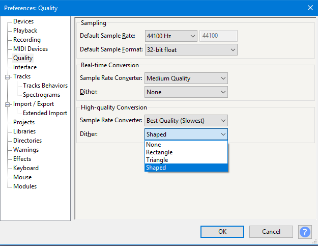

Dither
Contents
Dither Settings
In Audacity your settings for dither can be comtrolled from the Quality pane of Preferences.
- 
Downsampling
Downsampling occurs when converting a file to a lesser bit depth, or in real-time when Audacity plays audio at a lesser bit depth than the bit depth of the track. The bit depth of Audacity projects is set at "Default Sample Format" on the Quality pane of Preferences.
An example of downsampling is when a 32-bit float or 24-bit project is exported to a 16-bit file format. Downsampling also occurs when processing a 16-bit or 24-bit track because Audacity processes in 32-bit float format, which is then converted (downsampled) back to the 16 or 24-bit track format. Repeated downsampling can be avoided by working with 32-bit float format tracks (default), thus avoiding unnecessary conversion losses. Dithering is never applied within a 32-bit float project because no downsampling occurs.
Downsampling occurs on the fly during playback of 32-bit float projects, because audio interfaces work at either 16-bit or 24-bit.
You can choose the type of dither to be used in Audacity when performing operations requiring downsampling, or you can turn dither off altogether by setting it to none. The dither settings are again in the Quality pane of Preferences. The setting for "real-time dither" applies to dithering done when playing back, and that for "high-quality dither" to file writing (editing or exporting). "Real-time dither" is disabled by default (set to "None"), so as to minimize the load on the computer processor during play and record. The "real-time dither" setting has no affect on the project audio data or quality of exported tracks.
"Rectangular", "Triangular" and "Shaped" types of dither are simply different methods for randomizing the rounding process. The rectangular method can be thought of as like the roll of a die - any number has the same random probability of surfacing. The character of rectangular dither noise is low level white noise. The triangular method is characterized as a quieter, more constant, and higher pitched hiss than rectangular noise (sometimes called blue noise). Shaped dither is noise with a carefully contoured frequency content that puts most of the randomization at frequencies we can hear least easily. Shaped dither is the least audible at normal levels of amplification and is the default for the "High-quality conversion" setting.
Dither applied on Export - detailed explanation
Dither is only applied when converting from a higher bit depth to a lower bit depth. Exporting to WAV or other uncompressed audio format is virtually lossless in all situations. However there may be a very small amount of change to the audio data with some types of uncompressed audio export, depending on the settings in Audacity Preferences (see below).
- Exporting to 32-bit PCM WAV format is 100% lossless - no dithering is applied.
- Exporting to 24-bit PCM WAV format may be dithered with a peak dither level of around -130 dB
- Exporting to 16-bit PCM WAV format may be dithered with a peak dither level of around -80 dB
When exporting to 16-bit, the maximum "error" is +/- 3 on a scale of −32768 to +32767. 16-bit audio can at best be only accurate to the nearest digit on this scale.
When Exporting to 24-bit, the maximum "error" is +/- 3 on a scale of -8388608 to +8388607. At the present time, state of the art audio electronics exhibit greater inaccuracies than are produced by dithering to 24-bit format.
Where the "errors" come from
Audacity performs calculations using 32-bit float numbers, which provides incredible accuracy (considerably better than even the best top of the range audio interfaces). If Audacity needs to reduce the resolution to 16-bit, then there will be "rounding off" errors. If simple "rounding" is done by simply taking each sample value and converting it to the nearest 16-bit value, then a "steppiness" in the output will result which may be audible, particularly with extremely quiet sounds. To avoid this, Audacity applies "dither" in the conversion - this is often likened to "anti-aliasing" in graphics which is used to smooth the steppiness of curves. Rather than always rounding the values to the nearest 16-bit value, dithering will apply a degree of randomness to the rounding off so as to prevent causing steps.
Audacity has 3 alternative algorithms for how it applies dither and they are found in "Edit menu > Preferences > Quality". The dither settings apply to "High Quality Conversion". The available options are: None (no dither), rectangle, triangle and shaped. The differences between these settings are very subtle and you need to be listening carefully with good equipment to notice any difference. Generally, "triangle" or "shaped" will give the best (subjective) results.
- If dither is set to "none", then conversions from one bit depth to a lower bit depth will be done by simple rounding.
- If dither is enabled, pseudo random variations are applied to inexact conversions so that the rounding does not always occur in the same direction. The rounded number will be statistically more likely to be converted to the closest value at the lower bit-depth. The closer the sample value is to an exact number, the greater the probability that it will be converted to that number. This has a smoothing effect on converted values, producing a result that sounds closer to the intended audio signal than would occur by simple rounding. At very low amplitude levels, this randomization can be heard as very low level noise, but this can be minimized by shaping the probability curves, and hence the frequency content of the noise.
- Shaped dither (the Audacity default) has a higher peak amplitude than other forms of dither, but the noise is concentrated in the very high frequency range where it is less audible.
- Triangle dither produces a lower peak amplitude of noise than Shaped, but the noise is concentrated less in the higher frequencies. There is marginally less degrading of the sound quality if you apply Triangle dither twice than if you apply Shaped dither twice.
- Rectangle dither produces a similar noise amplitude as Triangle, but with very small amounts of randomization (in the order of +/- 1 bit). The frequency distribution is fairly even, such that it approximates white noise. Unlike the other two forms of dither, rectangle does not add noise to absolute silence.
When working in Audacity with 32-bit audio, dither should normally be enabled in the high quality conversion settings (it is by default). Dither will only be applied if the output is at a lower bit depth than the original data. Converting from a higher bit depth to a lower bit depth will inevitably have inaccuracies (because the lower bit depth is less accurate). Using dither just makes these inaccuracies less noticeable in the music. In most cases, triangle or shaped dither produce the subjectively best results.
Here's the exception to the rule: If you have recorded in 16-bit and are only doing simple editing (cut, delete, paste, trim...) and not doing any processing (amplify, equalize, frequency filter...) then for highest accuracy dither can be set to "none". In this case, because there are no 32-bit operations prior to export there is no benefit to using dither. Exporting a 16-bit track to 16-bit with dither set to "none" will be lossless. The same applies if exporting from a 24-bit track to an uncompressed 24-bit file format with dither disabled.
Whenever processing audio, the highest quality will be achieved by using 32-bit (float) throughout. Note that 32-bit audio files are twice the size of 16-bit audio files.